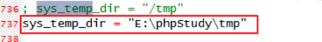

1.安装JDK
ElasticSearch是用JAVA语言开发的，其运行需要安装JDK。
JDK (Java Development Kit) ，是整个Java的核心，包括了Java运行环境（Java Runtime Envirnment），一堆Java工具和Java基础的类库(rt.jar)。
2.安装
出现以上界面，则启动成功
2.1
GitHub托管地址：
npm install启动：打开命令行，切换到Elasticsearch-Head目录，执行以下命令
npm run start由于跨域（Elasticsearch位于9200端口），需要添加配置： E:\elasticsearch-7.1.0\config\elasticsearch.yml中
#新添加的配置行
http.cors.enabled: true
http.cors.allow-origin: "*"2.2
在项目目录下，执行以下命令
composer require elasticsearch/elasticsearch配置php.ini的sys_temp_dir

单个 Elastic 实例称为一个节点（node）。一组节点构成一个集群（cluster）。
在Elasticsearch中，文档归属于一种类型(type),而这些类型存在于索引(index)中类比传统关系型数据库：
Relational DB -> Databases -> Tables -> Rows -> Columns
Elasticsearch -> Indices -> Types -> Documents -> Fields
每一个索引可以包含多个类型(types)（表）
每一个类型包含多个文档(documents)（行）
然后每个文档包含多个字段(Fields)（列）。
$es = \Elasticsearch\ClientBuilder::create()->setHosts(['127.0.0.1:9200'])->build();
$params = [
'index' => 'test_index'
];
$r = $es->indices()->create($params);
dump($r);die;预期结果：
array(3) {
["acknowledged"] => bool(true)
["shards_acknowledged"] => bool(true)
["index"] => string(10) "test_index"
}3
$es = \Elasticsearch\ClientBuilder::create()->setHosts(['127.0.0.1:9200'])->build();
$params = [
'index' => 'test_index',
'type' => 'test_type',
'id' => 100,
'body' => ['id'=>100, 'title'=>'PHP从入门到精通', 'author' => '张三']
];
$r = $es->index($params);
dump($r);die;预期结果：
array(8) {
["_index"] => string(10) "test_index"
["_type"] => string(9) "test_type"
["_id"] => string(3) "100"
["_version"] => int(1)
["result"] => string(7) "created"
["_shards"] => array(3) {
["total"] => int(2)
["successful"] => int(1)
["failed"] => int(0)
}
["_seq_no"] => int(0)
["_primary_term"] => int(1)
}
$es = \Elasticsearch\ClientBuilder::create()->setHosts(['127.0.0.1:9200'])->build();
$params = [
'index' => 'test_index',
'type' => 'test_type',
'id' => 100,
'body' => [
'doc' => ['id'=>100, 'title'=>'ES从入门到精通', 'author' => '张三']
]
];
$r = $es->update($params);
dump($r);die;预期结果：
array(8) {
["_index"] => string(10) "test_index"
["_type"] => string(9) "test_type"
["_id"] => string(3) "100"
["_version"] => int(2)
["result"] => string(7) "updated"
["_shards"] => array(3) {
["total"] => int(2)
["successful"] => int(1)
["failed"] => int(0)
}
["_seq_no"] => int(1)
["_primary_term"] => int(1)
}
$es = \Elasticsearch\ClientBuilder::create()->setHosts(['127.0.0.1:9200'])->build();
$params = [
'index' => 'test_index',
'type' => 'test_type',
'id' => 100,
];
$r = $es->delete($params);
dump($r);die;预期结果：
array(8) {
["_index"] => string(10) "test_index"
["_type"] => string(9) "test_type"
["_id"] => string(3) "100"
["_version"] => int(3)
["result"] => string(7) "deleted"
["_shards"] => array(3) {
["total"] => int(2)
["successful"] => int(1)
["failed"] => int(0)
}
["_seq_no"] => int(2)
["_primary_term"] => int(1)
}